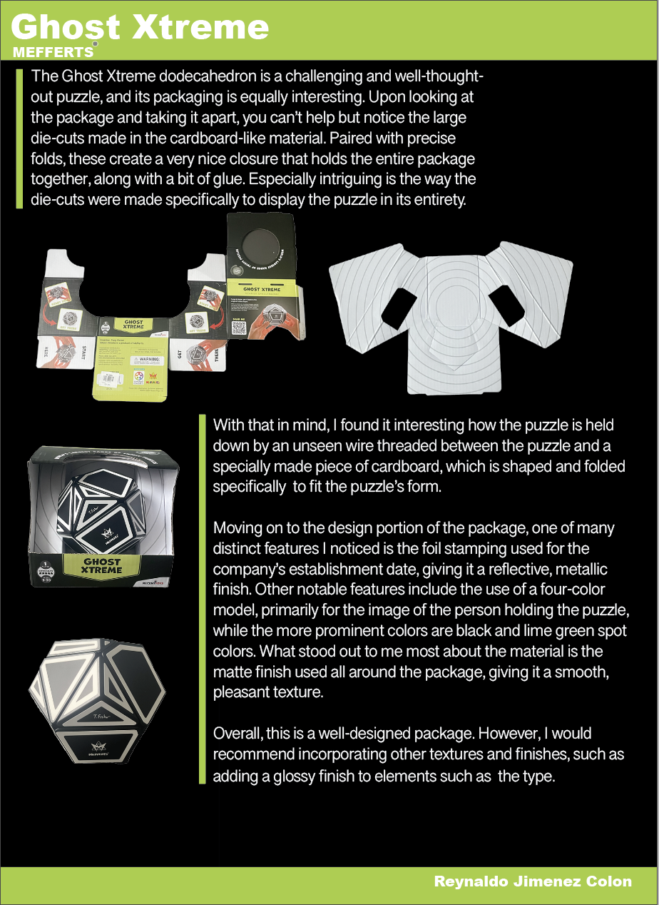

MoMa Package Design
For this assignment, I created a design presentation based on packaging I found at the MoMA Design Store. I chose the Ghost Xtreme puzzle package because I thought the structure and overall design were really unique compared to typical product packaging. In my layout, I included multiple photographs that I took of the package from different angles so I could highlight both the construction and the visual design elements. I organized the page to balance the images and text while also integrating my name into the overall composition, which was one of the assignment requirements.
While creating the project, I focused on analyzing the production techniques used in the packaging design. I discussed the large die-cuts that allowed the puzzle to be visible through the package, as well as the carefully designed folds that helped support and hold the product in place. I also talked about the hidden wire mechanism used to secure the puzzle inside the box and how the cardboard insert was shaped specifically for the object. On the visual side, I analyzed the use of foil stamping, matte finishes, metallic effects, and four-color printing used throughout the packaging. I wanted my presentation to not only describe the package but also explain why those techniques made the design successful both visually and functionally.
For the overall design of my board, I used a clean layout with strong contrast between the black background and lime green accents inspired by the original packaging colors. I arranged the text and images to guide the viewer through the project while keeping the design visually organized and easy to read. This assignment helped me better understand how packaging combines structure, materials, typography, and printing techniques to create both a functional and visually appealing product.